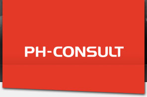
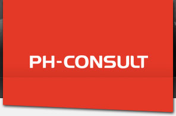

WinRegn - redigering af regndata
Form�l
Programmet afvikles under Windows 95/98. Alle filer placeres i samme bibliotek som programmet. Programmet l�ser regnfiler i KM2-format og kan �ndre definitionen af regnhændelser ved at variere den mindste t�rvejrstid mellem hændelser mellem 1 og 48 timer og ved at sætte et mindste volumen på de nye hændelser.
Programmet kan herefter udføre 3 ting:
1. Udskrive regnhændelser i KM2-format baseret på den nye definition af regnhændelser.
2. Beregne maksimale intensiteter mellem 1 minut og 1 d�gn samt varighed og totalt volumen af alle regnhændelser. Regnhændelserne udskrives i kronologisk orden baseret på den nye definition af regnhændelser.
3. Rangordne maksimale intensiteter og beregne de tilh�rende gentagelsesperioder baseret på de tre oftest brugte plotteformler. Observationsperioden kan angives eller beregnes af programmet. Programmet antager, at hvis der er en regnhændelse i et givet år er der m�lt hele �ret, svarende til SAMBAs metode.
Metode
Programmet fungerer som et almindeligt Windows program. Programmet har et vindue, der fålger kommandoerne i programmet.
F�rst er der en �bningsmeddelelse og derefter er der udf�rt en konvertering og endelig er der angivet en r�kke parametre uden at konverteringen er udf�rt.
Begr�nsninger i programmet
Tiden mellem hændelser kan v�lges til 1, 2, 3, 4, 6, 8, 10, 12, 24 og 48 timer. Der sættes maksimalt 10 regn sammen fra den oprindelige fil. En regnhændelse m� maksimalt vare 34 dage og det samlede antal regn kan ikke overstige 10000.
Programmet antager, at regnene er listet i KM2-format (KMD-formatet med 4 �rstalscifre). Konvertering fra KMD til KM2 kan ske ved hj�lp af programmet KMDKM2.EXE.
Endelig g�lder der, at programmet kan hentes �as-is�, dvs. PH-Consult kan ikke g�res ansvarlig for nogen form for fejl eller konsekvenser af fejl ved brug af programmet. Vi vil dog gerne h�re om evt. fejl, så de kan blive rettet.
God forn�jelse med programmet.
ReferencerWinRegn på Facebook
DownloadWINREGN.EXE
DokumentationWinRegn Dokumentation
|


 
